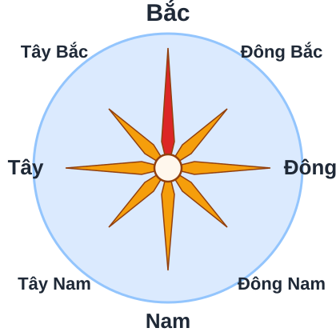
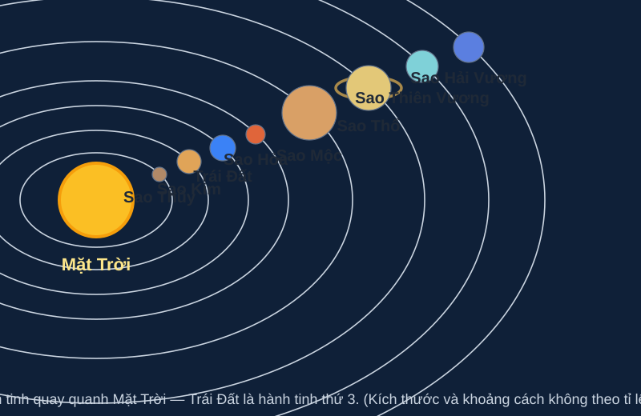
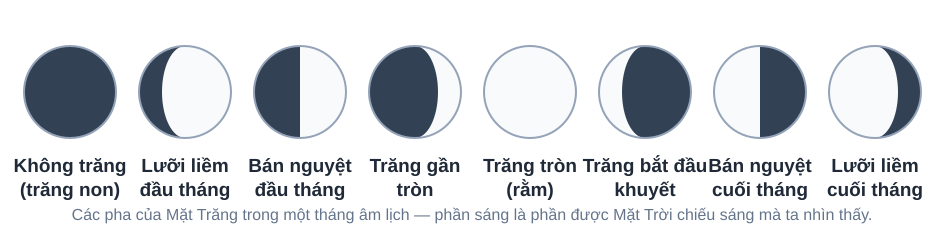
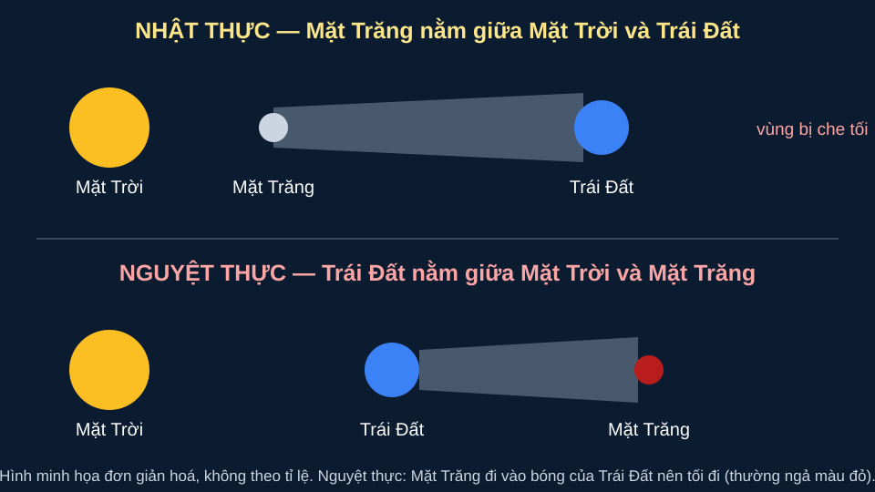
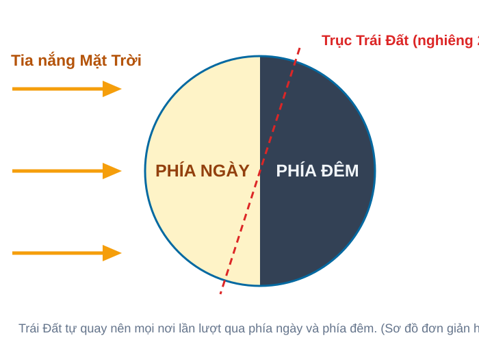
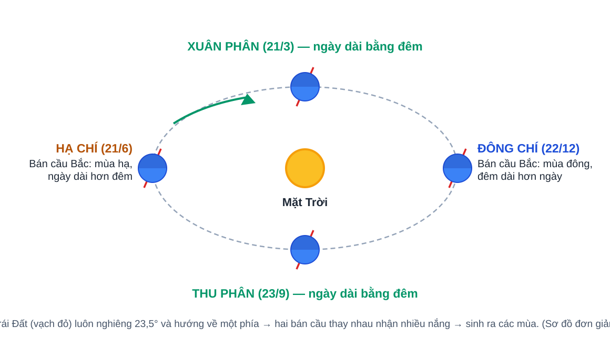
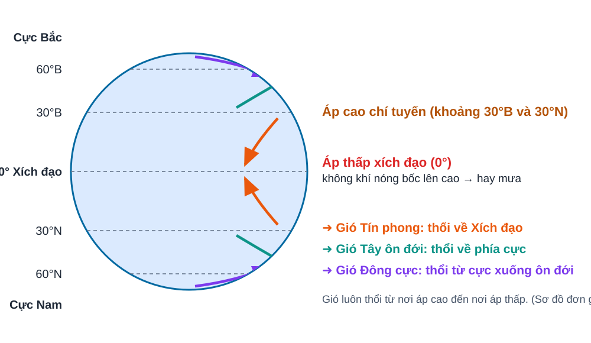
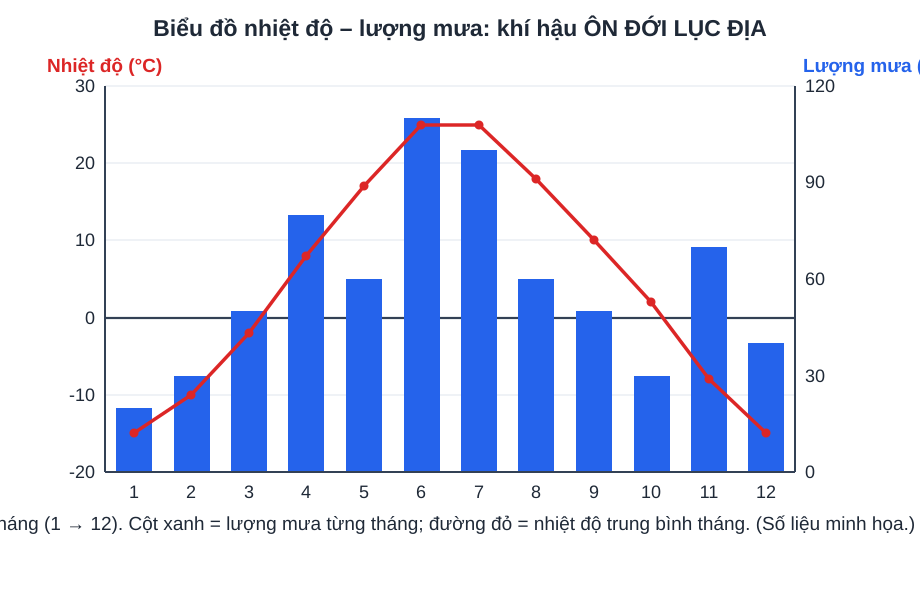

PHẦN 1 — HỌC TẬP TỪNG BÀI: 24 bài theo sách Kết nối tri thức • mỗi bài có hình ảnh, sơ đồ tư duy, câu hỏi gợi nhớ và flashcard riêng.
🟢 Ôn giữa kì 1: Bài mở đầu + Bài 1–13 • 🟠 Sau giữa kì: Bài 14–23 ← Trang chủ • Tới Phần 2 — Trắc nghiệm (168 câu) ➜
Chế độ xem:
Bài mở đầu
Bài mở đầuÔn giữa kì 1Bài mở đầu
Tại sao cần học Địa lí?
✨ Em có bao giờ tự hỏi: vì sao chỗ mình ở có mùa mưa, mùa khô? Vì sao điện thoại biết em đang đứng ở đâu? Môn Địa lí sẽ trả lời những câu hỏi thú vị đó!
Địa lí là môn học về Trái Đất: bề mặt Trái Đất, thiên nhiên (núi, sông, khí hậu…) và con người sống trên đó.
Học Địa lí để đọc được bản đồ, xem được dự báo thời tiết, hiểu thiên tai và biết bảo vệ môi trường.
Công cụ quen thuộc của Địa lí: bản đồ, quả địa cầu, lược đồ, tranh ảnh.
Địa lí có mặt trong đời sống mỗi ngày: tìm đường đi, xem trời mưa hay nắng, biết mùa vụ trồng trọt.
Trái Đất chụp từ tàu vũ trụ Apollo 17 — trông như một viên bi xanh. Đây là “ngôi nhà chung” mà môn Địa lí tìm hiểu. Ảnh: NASA/Apollo 17 crew; taken by either Harrison — Public domain. Nguồn: Wikimedia CommonsBản đồ địa hình Việt Nam. Nhớ là: học Địa lí luôn gắn với bản đồ! Ảnh: Milenioscuro — CC BY 4.0. Nguồn: Wikimedia Commons
📌 Điểm cần nhớ: Địa lí = môn học về Trái Đất và con người; công cụ chính là bản đồ và quả địa cầu.
💡 Mẹo nhớ: Địa lí trả lời 3 câu hỏi vàng: Ở đâu? — Như thế nào? — Vì sao?
🧠 Sơ đồ tư duy của bài
Bài mở đầu — Tại sao cần học Địa lí?
Địa lí học gìTrái Đất • thiên nhiên • con người
Công cụbản đồ • quả địa cầu • lược đồ • tranh ảnh
Ích lợiđọc bản đồ • hiểu thời tiết • phòng tránh thiên tai
Trong đời sốngtìm đường • mùa vụ • du lịch • bảo vệ môi trường
❓ Câu hỏi gợi nhớ của bài
Tự trả lời trong đầu trước, rồi bấm vào câu hỏi để kiểm tra đáp án. (Hình minh họa nằm ở phần bài học phía trên; đáp án không lặp lại hình để em tự nhớ lại nhé!)
Về bề mặt Trái Đất, thiên nhiên và con người sống trên Trái Đất.
Bản đồ và quả địa cầu.
Màu xanh dương — vì đại dương (nước biển) chiếm khoảng 3/4 bề mặt Trái Đất.
Xem dự báo thời tiết trước khi ra khỏi nhà, hoặc dùng bản đồ trên điện thoại để tìm đường.
Chương 1 — Bản đồ: phương tiện thể hiện bề mặt Trái Đất
Bài 1Ôn giữa kì 1Chương 1 — Bản đồ: phương tiện thể hiện bề mặt Trái Đất
Hệ thống kinh, vĩ tuyến. Tọa độ địa lí
✨ Trên quả địa cầu có những đường kẻ dọc, kẻ ngang chằng chịt như tấm lưới. Nhờ tấm lưới đó, người ta ghi được “địa chỉ” chính xác của mọi nơi trên Trái Đất!
Kinh tuyến là đường dọc, nối hai cực Bắc – Nam. Vĩ tuyến là đường ngang (đường tròn) song song với Xích đạo.
Kinh tuyến gốc là kinh tuyến 0°, đi qua Đài thiên văn Gờ-rin-uýt ở Luân Đôn (Anh).
Vĩ tuyến gốc là Xích đạo (0°) — vĩ tuyến dài nhất, chia Trái Đất thành bán cầu Bắc và bán cầu Nam.
Kinh độ của một điểm là khoảng cách góc từ điểm đó tới kinh tuyến gốc; vĩ độ là khoảng cách góc tới Xích đạo.
Tọa độ địa lí của một điểm gồm kinh độ + vĩ độ — giống như “số nhà” của điểm đó trên Trái Đất.
Sơ đồ kinh tuyến và vĩ tuyến: đường DỌC là kinh tuyến, đường NGANG là vĩ tuyến. Ảnh: Djexplo — CC0. Nguồn: Wikimedia CommonsCác vĩ tuyến được tô màu: Xích đạo nằm giữa, phía trên là bán cầu Bắc, phía dưới là bán cầu Nam. Sơ đồ tự vẽ minh họa (đơn giản hoá).
📌 Điểm cần nhớ: Kinh tuyến gốc = 0° (Gờ-rin-uýt) • Xích đạo = vĩ tuyến gốc 0° • Tọa độ địa lí = kinh độ + vĩ độ.
💡 Mẹo nhớ:Kinh thì DỌC, Vĩ thì NGANG — gốc kinh ở Luân Đôn, gốc vĩ là Xích đạo!
🧠 Sơ đồ tư duy của bài
Bài 1 — Hệ thống kinh, vĩ tuyến. Tọa độ địa lí
Kinh tuyếnđường DỌC nối 2 cực • gốc 0° qua Gờ-rin-uýt
Vĩ tuyếnđường NGANG song song Xích đạo • Xích đạo = 0°
Bán cầuBắc/Nam chia theo XÍCH ĐẠO • Đông/Tây chia theo kinh tuyến 0°–180°
Tọa độ địa lí= KINH ĐỘ + VĨ ĐỘ của một điểm
❓ Câu hỏi gợi nhớ của bài
Tự trả lời trong đầu trước, rồi bấm vào câu hỏi để kiểm tra đáp án. (Hình minh họa nằm ở phần bài học phía trên; đáp án không lặp lại hình để em tự nhớ lại nhé!)
Kinh tuyến là đường dọc nối hai cực; vĩ tuyến là đường ngang song song với Xích đạo.
Kinh tuyến 0°, đi qua Đài thiên văn Gờ-rin-uýt (Luân Đôn, Anh).
Bài 2Ôn giữa kì 1Chương 1 — Bản đồ: phương tiện thể hiện bề mặt Trái Đất
Bản đồ. Một số lưới kinh, vĩ tuyến. Phương hướng trên bản đồ
✨ Mở một tấm bản đồ ra, làm sao biết đâu là hướng Bắc để khỏi đi lạc? Chỉ cần nhớ một quy ước rất đơn giản dưới đây là em “cầm lái” được mọi tấm bản đồ!
Bản đồ là hình vẽ thu nhỏ bề mặt Trái Đất (hoặc một khu vực) lên mặt phẳng, theo một tỉ lệ nhất định.
Trên bản đồ, nếu không có mũi tên chỉ hướng Bắc thì theo quy ước: phía trên là Bắc, phía dưới là Nam, bên phải là Đông, bên trái là Tây.
Có 8 hướng chính: Bắc, Nam, Đông, Tây và 4 hướng phụ: Đông Bắc, Đông Nam, Tây Bắc, Tây Nam.
Cùng là lưới kinh, vĩ tuyến nhưng trên các bản đồ khác nhau chúng có thể thẳng hoặc cong — do cách “trải” bề mặt cong của Trái Đất ra mặt phẳng khác nhau.

Hoa hướng trên bản đồ: ngón dài nhất chỉ hướng BẮC. Xung quanh là 7 hướng còn lại. Sơ đồ tự vẽ minh họa (đơn giản hoá).Bản đồ địa hình Việt Nam. Theo quy ước: phía trên của bản đồ là hướng Bắc — biển Đông nằm ở phía Đông nước ta. Ảnh: Uwe Dedering — CC BY-SA 3.0. Nguồn: Wikimedia Commons
📌 Điểm cần nhớ: Trên bản đồ: trên = Bắc, dưới = Nam, phải = Đông, trái = Tây; có tất cả 8 hướng.
💡 Mẹo nhớ:“Trên Bắc – Dưới Nam – Phải Đông – Trái Tây” — đọc 3 lần là thuộc!
🧠 Sơ đồ tư duy của bài
Bài 2 — Bản đồ. Một số lưới kinh, vĩ tuyến. Phương hướng trên bản đồ
Bản đồ là gìhình vẽ THU NHỎ bề mặt Trái Đất lên mặt phẳng
Quy ước hướngtrên = BẮC • dưới = NAM • phải = ĐÔNG • trái = TÂY
8 hướng4 chính (Bắc, Nam, Đông, Tây) + 4 phụ (Đông Bắc, Đông Nam, Tây Bắc, Tây Nam)
Lưới kinh vĩcó thể thẳng hoặc cong tùy bản đồ
❓ Câu hỏi gợi nhớ của bài
Tự trả lời trong đầu trước, rồi bấm vào câu hỏi để kiểm tra đáp án. (Hình minh họa nằm ở phần bài học phía trên; đáp án không lặp lại hình để em tự nhớ lại nhé!)
Là hình vẽ thu nhỏ bề mặt Trái Đất lên mặt phẳng theo một tỉ lệ nhất định.
Phía trên là hướng Bắc, phía dưới là hướng Nam.
Hướng Đông Bắc — một trong 4 hướng phụ.
Vì mỗi bản đồ dùng cách chiếu (trải phẳng) bề mặt cong của Trái Đất khác nhau.
Bài 3Ôn giữa kì 1Chương 1 — Bản đồ: phương tiện thể hiện bề mặt Trái Đất
Tỉ lệ bản đồ. Tính khoảng cách thực tế dựa vào tỉ lệ bản đồ
✨ Trên bản đồ, từ nhà em đến trường chỉ dài bằng một gang tay. Nhưng ngoài đời thật là bao nhiêu ki-lô-mét? Tỉ lệ bản đồ chính là “chìa khóa” để đổi gang tay thành đường thật!
Tỉ lệ bản đồ cho biết bản đồ đã bị thu nhỏ bao nhiêu lần so với thực tế.
Ví dụ tỉ lệ 1 : 100 000 nghĩa là: 1 cm trên bản đồ bằng 100 000 cm ngoài thực tế, tức 1 km.
Có 2 dạng tỉ lệ: tỉ lệ số (viết dạng phân số) và tỉ lệ thước (một cây thước có chia vạch sẵn).
Công thức: Khoảng cách thực tế = khoảng cách trên bản đồ × số mẫu của tỉ lệ.
Ví dụ: bản đồ tỉ lệ 1 : 200 000, đo được 3 cm → thực tế = 3 × 200 000 = 600 000 cm = 6 km.
Tỉ lệ càng lớn (mẫu số càng nhỏ) thì bản đồ càng chi tiết nhưng chỉ vẽ được khu vực càng hẹp.
Một phần bản đồ địa hình thật của Cục Địa chất Mĩ (USGS), tỉ lệ 1 : 24 000, với các đường đồng mức cách nhau khoảng 6 m. Ảnh: USGS — Public domain. Nguồn: Wikimedia CommonsBản đồ địa hình Việt Nam có tỉ lệ nhỏ nên vẽ được cả nước, nhưng ít chi tiết hơn bản đồ tỉnh. Ảnh: Milenioscuro — CC BY 4.0. Nguồn: Wikimedia Commons
📌 Điểm cần nhớ: Khoảng cách thực tế = khoảng cách trên bản đồ × mẫu số tỉ lệ, rồi đổi đơn vị (100 000 cm = 1 km).
💡 Mẹo nhớ:Đo trên giấy — nhân mẫu số — đổi ra km là xong!
🧠 Sơ đồ tư duy của bài
Bài 3 — Tỉ lệ bản đồ. Tính khoảng cách thực tế dựa vào tỉ lệ bản đồ
Tỉ lệ bản đồ là gìcho biết bản đồ THU NHỎ bao nhiêu lần
Hai dạngtỉ lệ SỐ • tỉ lệ THƯỚC
Công thứcthực tế = đo trên bản đồ × MẪU SỐ
Ví dụ3 cm × 1:200 000 → 6 km
Chú ýtỉ lệ càng lớn → càng CHI TIẾT, phạm vi càng hẹp
❓ Câu hỏi gợi nhớ của bài
Tự trả lời trong đầu trước, rồi bấm vào câu hỏi để kiểm tra đáp án. (Hình minh họa nằm ở phần bài học phía trên; đáp án không lặp lại hình để em tự nhớ lại nhé!)
1 cm trên bản đồ bằng 100 000 cm (tức 1 km) ngoài thực tế.
Khoảng cách thực tế = khoảng cách trên bản đồ × mẫu số của tỉ lệ.
Ở mép dưới (hoặc góc) của bản đồ, cạnh bảng chú giải.
Bài 4Ôn giữa kì 1Chương 1 — Bản đồ: phương tiện thể hiện bề mặt Trái Đất
Kí hiệu và bảng chú giải bản đồ. Tìm đường đi trên bản đồ
✨ Bản đồ đầy những hình vẽ lạ: chấm tròn, đường ngoằn ngoèo, mảng màu xanh lá… Đó là “ngôn ngữ bí mật” của bản đồ — và bảng chú giải chính là cuốn từ điển để giải mã!
Kí hiệu bản đồ là các hình vẽ, màu sắc, chữ viết dùng để thể hiện các đối tượng địa lí lên bản đồ.
Có 3 loại kí hiệu: kí hiệu điểm (thành phố, sân bay, mỏ khoáng sản), kí hiệu đường (sông, đường đi, biên giới), kí hiệu diện (rừng, biển, vùng trồng trọt — thường là mảng màu).
Bảng chú giải là nơi giải thích ý nghĩa của tất cả các kí hiệu trên bản đồ.
Muốn đọc bản đồ: đọc bảng chú giải trước, rồi mới đối chiếu kí hiệu trên bản đồ.
Tìm đường đi trên bản đồ: xác định điểm bắt đầu → nhìn hướng cần đi → lần theo đường và các mốc dọc đường → tới điểm đến.
Bản đồ địa hình cắt gần: các đường cong màu nâu là đường đồng mức, mảng xanh là rừng — tất cả đều là kí hiệu. Ảnh: Topographic_map_example.png: United States Ge — Public domain. Nguồn: Wikimedia CommonsBản đồ địa hình một khu vực có sông: đường xanh uốn lượn là kí hiệu ĐƯỜNG của con sông. Ảnh: United States Geological Survey — Public domain. Nguồn: Wikimedia CommonsRừng nhiệt đới thật — trên bản đồ, rừng thường được kí hiệu bằng một MẢNG MÀU xanh lá (kí hiệu diện). Ảnh: Vyacheslav Argenberg — CC BY 4.0. Nguồn: Wikimedia Commons
📌 Điểm cần nhớ: 3 loại kí hiệu: điểm – đường – diện. Đọc bản đồ thì đọc chú giải trước.
💡 Mẹo nhớ:Chưa đọc chú giải, đừng vội đọc bản đồ!
🧠 Sơ đồ tư duy của bài
Bài 4 — Kí hiệu và bảng chú giải bản đồ. Tìm đường đi trên bản đồ
Kí hiệu điểmthành phố • sân bay • mỏ khoáng sản
Kí hiệu đườngsông • đường giao thông • biên giới
Kí hiệu diệnrừng • biển • đất trồng trọt (mảng màu)
Bảng chú giải“từ điển” giải thích mọi kí hiệu
Tìm đường điđiểm bắt đầu → hướng đi → mốc dọc đường → điểm đến
❓ Câu hỏi gợi nhớ của bài
Tự trả lời trong đầu trước, rồi bấm vào câu hỏi để kiểm tra đáp án. (Hình minh họa nằm ở phần bài học phía trên; đáp án không lặp lại hình để em tự nhớ lại nhé!)
Có 3 loại: kí hiệu điểm, kí hiệu đường và kí hiệu diện.
Kí hiệu đường — vì sông kéo dài thành một đường uốn lượn trên bản đồ.
Kí hiệu diện — một mảng màu xanh lá phủ lên khu vực có rừng.
Xác định điểm bắt đầu → chọn hướng đi → lần theo mốc dọc đường → đến điểm đích.
Bài 5Ôn giữa kì 1Chương 1 — Bản đồ: phương tiện thể hiện bề mặt Trái Đất
Lược đồ trí nhớ
✨ Không cần bản đồ in sẵn — em có thể tự vẽ đường từ nhà đến trường chỉ bằng trí nhớ của mình. Tấm hình vẽ đơn giản đó có tên rất hay: lược đồ trí nhớ!
Lược đồ trí nhớ là hình vẽ đơn giản, phác họa từ trí nhớ về một khu vực quen thuộc (đường đi học, khu phố, trường học…).
Lược đồ trí nhớ không cần đúng tỉ lệ tuyệt đối, nhưng phải đúng vị trí tương đối và phương hướng giữa các đối tượng.
Cách vẽ: chọn điểm mốc chính ở giữa → vẽ các con đường chính → thêm các đối tượng quen thuộc (chợ, trường, cây cầu…) → ghi tên và vẽ mũi tên chỉ hướng Bắc.
Lược đồ trí nhớ giúp em ghi nhớ không gian xung quanh và tìm đường dễ dàng hơn.
Lược đồ trí nhớ vẽ tay con đường từ NHÀ đến TRƯỜNG: đi thẳng qua chợ, rẽ phải ở cây cầu là tới trường. Em thử vẽ đường đi học của mình xem! Sơ đồ tự vẽ minh họa.Hoa hướng 8 hướng với cánh đỏ dài nhất chỉ hướng BẮC — khi vẽ lược đồ, đừng quên mũi tên chỉ hướng Bắc ở góc hình. Sơ đồ tự vẽ minh họa (đơn giản hoá).
📌 Điểm cần nhớ: Lược đồ trí nhớ: vẽ từ trí nhớ, không cần đúng tỉ lệ nhưng phải đúng vị trí tương đối + phương hướng, và có mũi tên Bắc.
💡 Mẹo nhớ:Nhớ đường bằng hình — vẽ ra là thuộc!
🧠 Sơ đồ tư duy của bài
Bài 5 — Lược đồ trí nhớ
Lược đồ trí nhớ là gìhình vẽ ĐƠN GIẢN từ trí nhớ về nơi quen thuộc
Đặc điểmkhông cần đúng tỉ lệ • phải đúng vị trí tương đối & phương hướng
Cách vẽmốc chính → đường chính → thêm đối tượng → ghi tên + mũi tên BẮC
Tác dụngghi nhớ không gian • tìm đường dễ hơn
❓ Câu hỏi gợi nhớ của bài
Tự trả lời trong đầu trước, rồi bấm vào câu hỏi để kiểm tra đáp án. (Hình minh họa nằm ở phần bài học phía trên; đáp án không lặp lại hình để em tự nhớ lại nhé!)
Lược đồ vẽ đơn giản từ trí nhớ, không cần đúng tỉ lệ tuyệt đối như bản đồ.
Vị trí tương đối giữa các đối tượng và phương hướng.
Đi thẳng qua chợ, tới cây cầu thì rẽ phải là đến trường (theo hình minh họa).
Để người xem biết phương hướng của các đối tượng trong hình.
Bài 6Ôn giữa kì 1Chương 2 — Trái Đất: hành tinh của hệ Mặt Trời
Trái Đất trong hệ Mặt Trời
✨ Trái Đất của chúng ta chỉ là một “hạt bụi xanh” giữa vũ trụ mênh mông — nhưng lại là hạt bụi duy nhất có sự sống. Cùng xem Trái Đất đứng ở đâu trong gia đình Mặt Trời nhé!
Hệ Mặt Trời gồm Mặt Trời ở trung tâm và 8 hành tinh quay quanh. Trái Đất là hành tinh thứ 3 tính từ Mặt Trời.
Thứ tự 8 hành tinh: Sao Thủy – Sao Kim – Trái Đất – Sao Hỏa – Sao Mộc – Sao Thổ – Sao Thiên Vương – Sao Hải Vương.
Trái Đất có hình cầu (hơi dẹt ở hai cực, phình ra ở Xích đạo), đường kính khoảng 12 742 km.
Trái Đất là hành tinh duy nhất được biết có sự sống — vì ở khoảng cách vừa phải với Mặt Trời, có nước lỏng và khí quyển.
Mặt Trăng là vệ tinh tự nhiên duy nhất của Trái Đất. Nhìn từ Trái Đất, phần sáng của Mặt Trăng thay đổi theo ngày trong tháng — đó là các pha của Mặt Trăng.
Khi Mặt Trăng nằm giữa Mặt Trời và Trái Đất, bóng của Mặt Trăng che Mặt Trời → nhật thực. Khi Trái Đất nằm giữa → nguyệt thực.

Sơ đồ hệ Mặt Trời (tự vẽ, tên hành tinh bằng tiếng Việt): Mặt Trời ở giữa, 8 hành tinh quay quanh. Trái Đất là hành tinh thứ 3. (Hình minh họa, kích thước và khoảng cách không theo tỉ lệ thật.) Sơ đồ tự vẽ minh họa (đơn giản hoá).

Các pha của Mặt Trăng trong một tháng: từ trăng non, trăng lưỡi liềm, trăng bán nguyệt đến trăng tròn (rằm). Sơ đồ tự vẽ minh họa (đơn giản hoá).

Sơ đồ nhật thực (trên) và nguyệt thực (dưới): khác nhau ở chỗ ai nằm giữa. (Hình minh họa, không theo tỉ lệ.) Sơ đồ tự vẽ minh họa (đơn giản hoá).
🪐 Mô hình 3D — Trái Đất trong hệ Mặt Trời
Mô hình 3D chưa tải được (thiết bị hoặc mạng chưa hỗ trợ) — em xem tạm sơ đồ 2D hệ Mặt Trời (tự vẽ, nhãn tiếng Việt) nhé. (Hình minh họa, không theo tỉ lệ.)
🖱️ Kéo chuột (hoặc vuốt) trên mô hình để xoay góc nhìn. Quả cầu xanh là Trái Đất tự quay và chuyển động quanh Mặt Trời vàng ở giữa; trục Trái Đất nghiêng 23,5°. Kích thước và khoảng cách trong mô hình không theo tỉ lệ thật. Texture bề mặt Trái Đất: ảnh Blue Marble (NASA) qua Wikimedia Commons, CC BY-SA 3.0.
🌙 Tương tác — Các pha của Mặt Trăng
👉 Bấm vào từng pha trăng. Mặt Trăng được Mặt Trời chiếu sáng từ phía bên phải (theo hình). Hình minh họa, không theo tỉ lệ.
📌 Điểm cần nhớ: Trái Đất: hành tinh thứ 3 từ Mặt Trời, hình cầu, đường kính ≈ 12 742 km; vệ tinh tự nhiên duy nhất là Mặt Trăng.
💡 Mẹo nhớ: Nhớ thứ tự hành tinh bằng câu: “Thủy – Kim – Đất – Hỏa – Mộc – Thổ – Thiên – Hải”. Trái Đất đứng thứ 3 — không nóng, không lạnh, vừa để sống!
🧠 Sơ đồ tư duy của bài
Bài 6 — Trái Đất trong hệ Mặt Trời
Hệ Mặt TrờiMặt Trời ở TRUNG TÂM • 8 hành tinh quay quanh
Vị trí của Trái Đấtthứ 3 tính từ Mặt Trời
Hình dạng, kích thướchình CẦU • đường kính ≈ 12 742 km
Vệ tinhMặt Trăng • có các PHA trăng trong tháng
Vì sao có sự sốngkhoảng cách vừa phải • có NƯỚC • có KHÍ QUYỂN
❓ Câu hỏi gợi nhớ của bài
Tự trả lời trong đầu trước, rồi bấm vào câu hỏi để kiểm tra đáp án. (Hình minh họa nằm ở phần bài học phía trên; đáp án không lặp lại hình để em tự nhớ lại nhé!)
Hành tinh thứ 3 (sau Sao Thủy và Sao Kim).
Vì Trái Đất ở khoảng cách vừa phải với Mặt Trời, có nước lỏng và khí quyển.
Khoảng ngày 14–15 âm lịch (ngày rằm).
Khi Mặt Trăng nằm giữa Mặt Trời và Trái Đất, che khuất Mặt Trời.
Bài 7Ôn giữa kì 1Chương 2 — Trái Đất: hành tinh của hệ Mặt Trời
Chuyển động tự quay quanh trục của Trái Đất và hệ quả
✨ Ví dụ gần gũi trước nhé: khi ở Việt Nam đang là buổi trưa nắng chang chang, thì ở nước Anh mới là sáng sớm! Vì sao cùng một lúc mà hai nơi khác nhau như vậy? Câu trả lời nằm ở sự tự quay của Trái Đất.
Trái Đất tự quay quanh một trục tưởng tượng nối hai cực. Trục này nghiêng khoảng 23,5° và luôn hướng về một phía.
Hướng tự quay: từ Tây sang Đông. Vì thế ta thấy Mặt Trời như “mọc” ở phía Đông và “lặn” ở phía Tây.
Trái Đất quay hết một vòng trong 24 giờ — một ngày đêm.
Hệ quả 1: ngày và đêm luân phiên — nửa Trái Đất hướng về Mặt Trời là ban ngày, nửa còn lại là ban đêm.
Hệ quả 2: giờ khác nhau ở các nơi — bề mặt Trái Đất được chia thành 24 múi giờ; càng về phía Đông giờ càng sớm. Việt Nam ở múi giờ +7.
Hệ quả 3: các vật chuyển động theo chiều kinh tuyến (gió, dòng nước…) bị lệch hướng: ở bán cầu Bắc lệch sang phải, bán cầu Nam lệch sang trái.
☀️ Việt Nam đang là BAN NGÀY
Sơ đồ động: Trái Đất tự quay từ Tây sang Đông — chấm đỏ là Việt Nam, khi chấm đỏ vào vùng sáng là ban ngày, vào vùng tối là ban đêm. Sơ đồ động tự vẽ minh họa.

Sơ đồ ngày và đêm: một nửa Trái Đất được Mặt Trời chiếu sáng (ban ngày), nửa kia khuất nắng (ban đêm). Trái Đất tự quay nên mọi nơi lần lượt có ngày và đêm. Sơ đồ tự vẽ minh họa (đơn giản hoá).
📌 Điểm cần nhớ: Tự quay: hướng Tây → Đông, 24 giờ một vòng → có ngày/đêm luân phiên, 24 múi giờ và hiện tượng lệch hướng.
💡 Mẹo nhớ:Quay Tây sang Đông — nên nắng “mọc” đằng Đông! Và nhớ: Đông giờ SỚM, Tây giờ MUỘN.
🧠 Sơ đồ tư duy của bài
Bài 7 — Chuyển động tự quay quanh trục của Trái Đất và hệ quả
Hệ quả 2 →giờ khác nhau • 24 MÚI GIỜ • Việt Nam +7
Hệ quả 3 →vật chuyển động LỆCH HƯỚNG (Bắc: phải, Nam: trái)
❓ Câu hỏi gợi nhớ của bài
Tự trả lời trong đầu trước, rồi bấm vào câu hỏi để kiểm tra đáp án. (Hình minh họa nằm ở phần bài học phía trên; đáp án không lặp lại hình để em tự nhớ lại nhé!)
Vì Trái Đất hình cầu và tự quay: nửa hướng về Mặt Trời là ngày, nửa khuất là đêm, hai nửa đổi chỗ liên tục.
Từ Tây sang Đông, hết một vòng trong 24 giờ.
Đang là ban đêm — vì lúc đó Việt Nam ở nửa Trái Đất không được Mặt Trời chiếu sáng.
Vì Trái Đất tự quay nên các kinh tuyến khác nhau đón ánh sáng Mặt Trời vào lúc khác nhau — mỗi nơi một giờ riêng (múi giờ).
Bài 8Ôn giữa kì 1Chương 2 — Trái Đất: hành tinh của hệ Mặt Trời
Chuyển động của Trái Đất quanh Mặt Trời và hệ quả
✨ Mùa hè ở nước ta, 6 giờ tối trời vẫn sáng trưng; mùa đông thì 6 giờ tối đã tối om. Vì sao cùng 6 giờ mà hai mùa khác nhau thế? Vì Trái Đất vừa tự quay, vừa “đi vòng quanh” Mặt Trời với cái trục luôn nghiêng!
Trái Đất chuyển động quanh Mặt Trời theo quỹ đạo hình e-líp gần tròn, một vòng mất 365 ngày 6 giờ (một năm; 6 giờ thừa dồn 4 năm thành 1 ngày nhuận 29/2).
Khi chuyển động, trục Trái Đất luôn nghiêng và hướng về một phía (phía sao Bắc Cực) — đây chính là chìa khóa sinh ra các mùa.
Bốn mốc quan trọng: Xuân phân 21/3 • Hạ chí 22/6 • Thu phân 23/9 • Đông chí 22/12.
Ngày Hạ chí (22/6): bán cầu Bắc ngả về phía Mặt Trời → Bắc bán cầu vào mùa hạ, ngày dài hơn đêm; bán cầu Nam thì ngược lại (mùa đông).
Ngày Đông chí (22/12): bán cầu Bắc ngả ra xa Mặt Trời → mùa đông, đêm dài hơn ngày.
Hai ngày phân (21/3 và 23/9): hai bán cầu được chiếu sáng như nhau → khắp nơi ngày dài bằng đêm.
👉 Bấm vào từng vị trí Trái Đất để xem mùa và độ dài ngày – đêm. Hình minh họa, kích thước và khoảng cách không theo tỉ lệ thật.
Sơ đồ tương tác: bấm vào từng vị trí của Trái Đất trên quỹ đạo để xem mùa và độ dài ngày – đêm ở bán cầu Bắc. (Hình minh họa, kích thước và khoảng cách không theo tỉ lệ.) Sơ đồ tương tác tự vẽ minh họa.Sơ đồ khoa học về 4 vị trí đặc biệt của Trái Đất quanh Mặt Trời: hai ngày chí và hai ngày phân. (Hình minh họa, không theo tỉ lệ.) Ảnh: Colivine — CC0. Nguồn: Wikimedia Commons

Cùng một nơi ở bán cầu Bắc nhìn về Mặt Trời ở các thời điểm khác nhau trong năm — góc chiếu nắng thay đổi nên sinh ra các mùa. Sơ đồ tự vẽ minh họa (đơn giản hoá).
📌 Điểm cần nhớ: Quanh Mặt Trời: 365 ngày 6 giờ/vòng; trục luôn nghiêng một hướng → có các mùa và ngày/đêm dài ngắn theo mùa. 4 mốc: 21/3 – 22/6 – 23/9 – 22/12.
💡 Mẹo nhớ:Bán cầu nào NGẢ về Mặt Trời thì bán cầu đó vào HÈ và ngày DÀI hơn đêm!
🧠 Sơ đồ tư duy của bài
Bài 8 — Chuyển động của Trái Đất quanh Mặt Trời và hệ quả
Quỹ đạoe-líp gần tròn • 1 vòng = 365 NGÀY 6 GIỜ
Trục Trái Đấtluôn NGHIÊNG và hướng về 1 phía → sinh ra MÙA
Hạ chí 22/6 →Bắc ngả VỀ Mặt Trời → hè ở Bắc • ngày > đêm
Đông chí 22/12 →Bắc ngả RA XA → đông ở Bắc • đêm > ngày
Xuân/Thu phân →chiếu sáng đều 2 bán cầu → ngày = đêm khắp nơi
❓ Câu hỏi gợi nhớ của bài
Tự trả lời trong đầu trước, rồi bấm vào câu hỏi để kiểm tra đáp án. (Hình minh họa nằm ở phần bài học phía trên; đáp án không lặp lại hình để em tự nhớ lại nhé!)
Do trục Trái Đất luôn nghiêng và hướng về một phía trong khi Trái Đất chuyển động quanh Mặt Trời, nên mỗi bán cầu thay nhau ngả về phía Mặt Trời.
Bài 9Ôn giữa kì 1Chương 2 — Trái Đất: hành tinh của hệ Mặt Trời
Xác định phương hướng ngoài thực tế
✨ Không có điện thoại, không có bản đồ — giữa một khu rừng em làm sao biết đâu là hướng Bắc? Yên tâm: thiên nhiên và một chiếc la bàn đơn giản sẽ “chỉ đường” cho em!
Dụng cụ quen thuộc nhất để xác định phương hướng là la bàn: kim la bàn luôn chỉ hướng Bắc – Nam (đầu kim màu thường chỉ hướng Bắc).
Nhờ Mặt Trời: buổi sáng Mặt Trời ở phía Đông, buổi trưa ở phía Nam (với Việt Nam), buổi chiều ở phía Tây.
Mẹo giang hồ: đứng dang hai tay — tay phải chỉ hướng Mặt Trời mọc (Đông), tay trái chỉ Tây, mặt hướng Bắc, lưng là Nam.
Ban đêm, có thể tìm sao Bắc Cực: ngôi sao nằm gần đúng hướng Bắc, là đầu của chòm sao Tiểu Hùng.
Trên điện thoại thông minh có ứng dụng la bàn và bản đồ số giúp xác định hướng, vị trí rất nhanh.
Một chiếc la bàn cổ bằng đồng. Kim la bàn luôn tự động xoay về hướng Bắc – Nam dù em đứng ở đâu. Ảnh: Barby Dalbosco barbydalbosco — CC0. Nguồn: Wikimedia CommonsHoa hướng 8 hướng (sơ đồ tự vẽ, nhãn tiếng Việt): B = Bắc, Đ = Đông, N = Nam, T = Tây; hướng phụ: ĐB = Đông Bắc, ĐN = Đông Nam, TN = Tây Nam, TB = Tây Bắc. Sơ đồ tự vẽ minh họa (đơn giản hoá).
📌 Điểm cần nhớ: La bàn: kim chỉ Bắc – Nam. Mặt Trời: sáng Đông – trưa Nam – chiều Tây. Đêm: tìm sao Bắc Cực ở hướng Bắc.
💡 Mẹo nhớ:Tay phải đón nắng sớm (Đông) — mặt em là Bắc, lưng em là Nam!
🧠 Sơ đồ tư duy của bài
Bài 9 — Xác định phương hướng ngoài thực tế
La bànkim luôn chỉ BẮC – NAM
Nhờ Mặt Trờisáng: ĐÔNG • trưa: NAM • chiều: TÂY
Ban đêmtìm SAO BẮC CỰC → hướng Bắc
Điện thoạiứng dụng la bàn & bản đồ số
Mẹo dang taytay phải = Đông → mặt = Bắc, lưng = Nam
❓ Câu hỏi gợi nhớ của bài
Tự trả lời trong đầu trước, rồi bấm vào câu hỏi để kiểm tra đáp án. (Hình minh họa nằm ở phần bài học phía trên; đáp án không lặp lại hình để em tự nhớ lại nhé!)
Hướng Bắc – Nam; đầu kim đánh dấu thường chỉ hướng Bắc.
Mặt Trời ở phía Đông; đối diện là Tây, bên trái (khi quay mặt về Đông)… cách dễ nhất: dang tay phải về phía Mặt Trời → mặt là Bắc, lưng là Nam.
N = Bắc (North), E = Đông (East), S = Nam (South), W = Tây (West).
Tìm sao Bắc Cực — ngôi sao nằm gần đúng ở hướng Bắc.
Bài 10Ôn giữa kì 1Chương 3 — Cấu tạo của Trái Đất. Vỏ Trái Đất
Cấu tạo của Trái Đất. Các mảng kiến tạo
✨ Nếu bổ Trái Đất ra như bổ một quả trứng, bên trong sẽ có gì? Lòng trắng, lòng đỏ… hay những lớp đá nóng chảy đỏ rực? Cùng “mổ” Trái Đất bằng sơ đồ nhé!
Trái Đất gồm 3 lớp như quả trứng: vỏ Trái Đất (mỏng như vỏ trứng), lớp bao phủ / manti (dày như lòng trắng), nhân ở trung tâm (như lòng đỏ).
Vỏ Trái Đất mỏng nhất: dày từ khoảng 5 km (dưới đại dương) đến 70 km (dưới lục địa), là nơi con người sinh sống.
Nhân Trái Đất rất nóng, nhiệt độ lên tới khoảng 6 000°C — nóng gần bằng bề mặt Mặt Trời!
Vỏ Trái Đất không liền một khối mà bị nứt thành nhiều mảng kiến tạo như những mảnh ghép khổng lồ.
Các mảng kiến tạo trôi rất chậm trên lớp manti (chỉ vài cm mỗi năm) — chậm như móng tay của em dài ra vậy!
Sơ đồ cắt ngang Trái Đất: lớp ngoài mỏng là VỎ, lớp dày giữa là MANTI (bao phủ), trong cùng là NHÂN. Các số trên hình đánh dấu từng lớp. Ảnh: Original: USGS Vector: Anasofiapaixao — Public domain. Nguồn: Wikimedia CommonsBản đồ các mảng kiến tạo lớn trên Trái Đất — vỏ Trái Đất như một bức tranh ghép khổng lồ đang trôi rất chậm. Đọc tên các mảng ghi trên bản đồ (tiếng Anh → tiếng Việt): Pacific = Thái Bình Dương, Eurasian = Á–Âu, African = Phi, Indian = Ấn Độ, Australian = Ô-xtrây-lia, North American = Bắc Mĩ, South American = Nam Mĩ, Antarctic = Nam Cực, Nazca = Na-xca, Cocos = Cô-cốt, Caribbean = Ca-ri-bê, Arabian = A-rập, Philippine = Phi-líp-pin, Somali = Xô-ma-li, Scotia = Xcô-tia. Ảnh: M.Bitton — CC BY-SA 3.0. Nguồn: Wikimedia Commons
📌 Điểm cần nhớ: Trái Đất có 3 lớp: vỏ – manti (bao phủ) – nhân. Vỏ nứt thành các mảng kiến tạo trôi chậm vài cm/năm.
3 lớp của Trái ĐấtVỎ (mỏng) • MANTI/bao phủ (dày) • NHÂN (nóng nhất)
Vỏ Trái Đất5 km dưới biển → 70 km dưới lục địa • nơi ta sinh sống
Nhânnóng tới ≈ 6 000°C
Mảng kiến tạovỏ nứt thành nhiều MẢNH GHÉP khổng lồ
Chuyển động mảngtrôi CHẬM vài cm/năm → sinh núi, động đất, núi lửa
❓ Câu hỏi gợi nhớ của bài
Tự trả lời trong đầu trước, rồi bấm vào câu hỏi để kiểm tra đáp án. (Hình minh họa nằm ở phần bài học phía trên; đáp án không lặp lại hình để em tự nhớ lại nhé!)
Vỏ Trái Đất → lớp bao phủ (manti) → nhân.
Vỏ Trái Đất — từ khoảng 5 km dưới đại dương đến 70 km dưới lục địa.
Ở ranh giới — nơi tiếp xúc giữa các mảng kiến tạo, vì ở đó các mảng va chạm, trượt qua nhau mạnh nhất.
Bài 11Ôn giữa kì 1Chương 3 — Cấu tạo của Trái Đất. Vỏ Trái Đất
Quá trình nội sinh và quá trình ngoại sinh. Hiện tượng tạo núi
✨ Ai đã “xây” nên những dãy núi cao sừng sững? Và ai hằng ngày “gọt” chúng thấp dần đi? Đó là hai “đội thợ” ngược nhau: một đội đẩy từ trong lòng đất, một đội bào mòn từ bên ngoài!
Quá trình nội sinh là các quá trình xảy ra bên trong lòng Trái Đất (do năng lượng trong lòng đất) → làm bề mặt nâng lên, uốn nếp, đứt gãy — tạo núi, động đất, núi lửa.
Quá trình ngoại sinh xảy ra bên trên bề mặt Trái Đất (do nắng, gió, nước, băng…) → bào mòn, hạ thấp bề mặt, bồi đắp nơi trũng.
Hai quá trình này ngược nhau nhưng xảy ra cùng lúc: nội sinh “xây” lên, ngoại sinh “gọt” xuống.
Hiện tượng tạo núi: khi hai mảng kiến tạo xô vào nhau, đất đá bị nén, uốn nếp và đẩy cao lên thành dãy núi (như dãy Hi-ma-lay-a — “nóc nhà thế giới”).
Ví dụ ngoại sinh gần gũi: dòng sông chảy xiết bào mòn hai bờ, gió thổi mài mòn đá sa mạc thành những đụn cát.
Các lớp đá bị UỐN CONG như sóng — dấu vết của lực nội sinh nén ép đất đá từ hai phía. Ảnh: Rudi Winter — CC BY-SA 2.0. Nguồn: Wikimedia CommonsHẻm núi Grand Canyon (Mĩ): dòng sông Colorado chảy qua hàng triệu năm đã BÀO MÒN đá, khoét thành vực sâu khổng lồ — công việc của ngoại sinh. Ảnh: Luca Galuzzi (Lucag) — CC BY-SA 2.5. Nguồn: Wikimedia CommonsNhững đụn cát ở sa mạc Namib do GIÓ (ngoại sinh) thổi dồn và mài mòn tạo thành. Ảnh: Sudzie — CC BY-SA 4.0. Nguồn: Wikimedia Commons
📌 Điểm cần nhớ: Nội sinh = lực từ bên trong → nâng lên, tạo núi. Ngoại sinh = lực từ bên ngoài (nắng, gió, nước) → bào mòn, hạ thấp. Hai quá trình đối nghịch nhau.
💡 Mẹo nhớ:Nội là trong (đẩy lên), Ngoại là ngoài (gọt xuống) — hai đội thợ ngược nhau!
🧠 Sơ đồ tư duy của bài
Bài 11 — Quá trình nội sinh và quá trình ngoại sinh. Hiện tượng tạo núi
Nội sinhtừ BÊN TRONG lòng đất → NÂNG LÊN • uốn nếp • tạo núi
Hiện tượng tạo núi2 mảng XÔ VÀO NHAU → đất đá bị nén, đẩy CAO lên
Ví dụnội sinh: dãy Hi-ma-lay-a • ngoại sinh: sông bào mòn, gió tạo đụn cát
❓ Câu hỏi gợi nhớ của bài
Tự trả lời trong đầu trước, rồi bấm vào câu hỏi để kiểm tra đáp án. (Hình minh họa nằm ở phần bài học phía trên; đáp án không lặp lại hình để em tự nhớ lại nhé!)
Nội sinh: lực từ bên trong lòng Trái Đất. Ngoại sinh: lực từ bên ngoài bề mặt (nắng, gió, nước, băng…).
Khi hai mảng kiến tạo xô vào nhau, đất đá bị nén ép, uốn nếp và đẩy cao lên thành núi.
Nội sinh — vì chỉ lực nén ép từ trong lòng đất mới uốn cong được các lớp đá cứng.
Quá trình ngoại sinh (nước sông bào mòn đá qua hàng triệu năm).
Bài 12Ôn giữa kì 1Chương 3 — Cấu tạo của Trái Đất. Vỏ Trái Đất
Núi lửa và động đất
✨ Có những ngọn núi biết… phun lửa! Và có lúc mặt đất bỗng rung lắc dữ dội làm nhà cửa đổ sập. Đó là núi lửa và động đất — hai “cơn giận” đáng sợ nhất của Trái Đất.
Núi lửa là hiện tượng macma (đá nóng chảy trong lòng đất) phun trào lên bề mặt qua khe nứt của vỏ Trái Đất; macma khi phun ra ngoài gọi là dung nham.
Núi lửa có 2 loại: đang hoạt động và đã tắt. Vùng ven Thái Bình Dương có rất nhiều núi lửa — gọi là “Vành đai lửa Thái Bình Dương”.
Động đất là hiện tượng mặt đất rung lắc do các mảng kiến tạo va chạm, trượt qua nhau, làm nứt vỡ vỏ Trái Đất.
Hậu quả: núi lửa và động đất gây thiệt hại lớn về người và tài sản, có thể gây sóng thần nếu xảy ra dưới biển.
Mặt tốt ít ai ngờ: tro núi lửa lâu ngày thành đất đỏ bazan màu mỡ (như ở Tây Nguyên nước ta) rất tốt cho cây trồng.
Sơ đồ mặt cắt một núi lửa: macma từ lò macma ở sâu dâng lên, phun ra miệng núi thành dung nham, tro bụi. Ảnh: MesserWoland — CC BY-SA 3.0. Nguồn: Wikimedia CommonsMột tòa nhà bị đổ sập sau trận động đất ở Fukui (Nhật Bản, 1948) — cho thấy sức tàn phá của động đất. Ảnh: Bert Cohen — Public domain. Nguồn: Wikimedia Commons
📌 Điểm cần nhớ: Núi lửa = macma phun trào; động đất = mặt đất rung lắc. Cả hai đều do hoạt động bên trong Trái Đất (nội sinh) và tập trung ở nơi tiếp xúc giữa các mảng kiến tạo.
💡 Mẹo nhớ: Nhớ: macma ở trong lòng đất — phun ra ngoài thành dung nham!
➕ Kiến thức bổ sung — biết thêm để làm được bài tập: Khi xảy ra động đất mạnh, em nhớ nguyên tắc an toàn: bảo vệ đầu (chui xuống gầm bàn chắc chắn); khi hết rung lắc thì chạy ra khỏi nhà tới nơi trống trải, tránh xa tòa nhà cao, cây lớn và dây điện — và tuyệt đối không dùng thang máy.
🧠 Sơ đồ tư duy của bài
Bài 12 — Núi lửa và động đất
Núi lửaMACMA phun trào qua khe nứt → ra ngoài gọi là DUNG NHAM
Phân bốven Thái Bình Dương = “Vành đai lửa”
Động đấtmặt đất RUNG LẮC do mảng va chạm, nứt vỡ
Hậu quảthiệt hại người & của • có thể gây SÓNG THẦN
Mặt có lợitro núi lửa → đất bazan MÀU MỠ trồng cây
❓ Câu hỏi gợi nhớ của bài
Tự trả lời trong đầu trước, rồi bấm vào câu hỏi để kiểm tra đáp án. (Hình minh họa nằm ở phần bài học phía trên; đáp án không lặp lại hình để em tự nhớ lại nhé!)
Macma là đá nóng chảy còn ở trong lòng đất; khi phun ra bề mặt thì gọi là dung nham.
Do các mảng kiến tạo va chạm, trượt qua nhau làm vỏ Trái Đất nứt vỡ, mặt đất rung lắc.
Từ lò macma ở sâu trong lòng đất, theo đường dẫn lên và phun ra ở miệng núi lửa.
Tro bụi núi lửa lâu ngày tạo thành đất đỏ bazan màu mỡ, rất tốt cho cây trồng (ví dụ ở Tây Nguyên).
Bài 13Ôn giữa kì 1Chương 3 — Cấu tạo của Trái Đất. Vỏ Trái Đất
Các dạng địa hình chính trên Trái Đất. Khoáng sản
✨ Bề mặt Trái Đất không bằng phẳng như sân trường: chỗ nhô cao thành núi, chỗ phẳng mênh mông là đồng bằng, chỗ trũng xuống thành thung lũng. Cùng làm một chuyến “du lịch” qua các dạng địa hình chính nhé!
Có 4 dạng địa hình chính: núi, cao nguyên, đồi và đồng bằng.
Núi: cao trên 500 m so với mực nước biển, đỉnh nhọn, sườn dốc. Đồi: thấp hơn 500 m, đỉnh tròn, sườn thoải.
Cao nguyên: cao trên 500 m nhưng bề mặt tương đối bằng phẳng như một chiếc bàn khổng lồ. Đồng bằng: thấp dưới 200 m, bề mặt bằng phẳng, đất đai màu mỡ.
Dựa vào độ cao, núi chia thành: núi thấp (dưới 1 000 m), núi trung bình (1 000–2 000 m), núi cao (trên 2 000 m). Đỉnh Ê-vơ-rét (Hi-ma-lay-a) cao khoảng 8 848 m — cao nhất thế giới.
Khoáng sản là những tích tụ tự nhiên của khoáng vật có ích trong lòng đất (than đá, dầu mỏ, sắt, vàng…). Khoáng sản chia 3 nhóm: năng lượng (than, dầu mỏ), kim loại (sắt, vàng, nhôm), phi kim loại (đá vôi, muối, a-pa-tít).
Đỉnh Ê-vơ-rét — “nóc nhà của thế giới” cao khoảng 8 848 m, thuộc dạng địa hình NÚI CAO. Ảnh: Mount_Everest_as_seen_from_Drukair2.jpg: shri — CC BY-SA 2.0. Nguồn: Wikimedia CommonsCao nguyên Tây Tạng: vùng đất CAO nhưng bề mặt khá bằng phẳng, trải rộng mênh mông. Ảnh: Jan Kranendonk ( — CC BY-SA 4.0. Nguồn: Wikimedia CommonsMột khúc sông uốn lượn trên đồng bằng nhìn từ trên cao — đồng bằng thấp, phẳng, là nơi sông bồi đắp phù sa. Ảnh: Hillebrand Steve, U.S. Fish and Wildlife Serv — Public domain. Nguồn: Wikimedia CommonsTinh thể thạch anh — một khoáng sản phi kim loại đẹp như pha lê, được khai thác từ lòng đất. Ảnh: JJ Harrison ( — CC BY-SA 2.5. Nguồn: Wikimedia Commons
📌 Điểm cần nhớ: 4 dạng địa hình: núi (cao, dốc) – cao nguyên (cao, phẳng) – đồi (thấp, tròn) – đồng bằng (thấp, phẳng). Khoáng sản có 3 nhóm: năng lượng – kim loại – phi kim loại.
💡 Mẹo nhớ: Phân biệt nhanh: cao mà dốc là NÚI, cao mà phẳng là CAO NGUYÊN, thấp tròn là ĐỒI, thấp phẳng là ĐỒNG BẰNG!
➕ Kiến thức bổ sung — biết thêm để làm được bài tập: Việt Nam có hai đồng bằng lớn nhất: đồng bằng sông Hồng ở miền Bắc (do phù sa sông Hồng bồi đắp) và đồng bằng sông Cửu Long ở miền Nam (do phù sa sông Mê Kông bồi đắp). Đây là hai vựa lúa lớn nhất nước ta.
🧠 Sơ đồ tư duy của bài
Bài 13 — Các dạng địa hình chính trên Trái Đất. Khoáng sản
Núi> 500 m • đỉnh NHỌN, sườn DỐC • Ê-vơ-rét ≈ 8 848 m
Cao nguyên> 500 m nhưng bề mặt PHẲNG như mặt bàn
Đồi< 500 m • đỉnh TRÒN, sườn THOẢI
Đồng bằng< 200 m • bằng PHẲNG • đất màu mỡ
Khoáng sảnnăng lượng (than, dầu) • kim loại (sắt, vàng) • phi kim (đá vôi, muối)
❓ Câu hỏi gợi nhớ của bài
Tự trả lời trong đầu trước, rồi bấm vào câu hỏi để kiểm tra đáp án. (Hình minh họa nằm ở phần bài học phía trên; đáp án không lặp lại hình để em tự nhớ lại nhé!)
Núi, cao nguyên, đồi và đồng bằng.
Giống: đều cao trên 500 m. Khác: núi đỉnh nhọn, sườn dốc; cao nguyên bề mặt bằng phẳng.
Bài 14Sau giữa kìChương 3 — Cấu tạo của Trái Đất. Vỏ Trái Đất
Thực hành: Đọc lược đồ địa hình tỉ lệ lớn và lát cắt địa hình đơn giản
✨ Hôm nay em đóng vai “kĩ sư bản đồ”: nhìn những đường cong vòng vòng trên lược đồ và đoán xem chỗ nào cao, chỗ nào thấp, sườn dốc hay thoải. Nghe khó mà vui lắm!
Đường đồng mức (đường đẳng cao) là đường nối các điểm có cùng độ cao trên lược đồ địa hình.
Đọc đường đồng mức: các đường càng gần nhau (sít nhau) thì sườn càng DỐC; càng xa nhau (thưa) thì sườn càng thoải.
Số ghi trên đường đồng mức cho biết độ cao của đường đó (tính bằng mét).
Lát cắt địa hình là hình vẽ mặt cắt của bề mặt đất dọc theo một đường thẳng — như cắt một ổ bánh mì ra để xem ruột bên trong!
Cách vẽ lát cắt đơn giản: xác định các điểm cao – thấp dọc đường cắt trên lược đồ → chấm lên giấy theo tỉ lệ độ cao → nối các điểm lại.
Lược đồ địa hình tỉ lệ lớn: những đường cong khép kín là đường ĐỒNG MỨC. Chỗ đường sít nhau = sườn dốc. Ảnh: Topographic_map_example.png: United States Ge — Public domain. Nguồn: Wikimedia CommonsLát cắt địa hình tự vẽ theo đường A–B trên lược đồ: từ đồng bằng thấp đi lên đỉnh đồi rồi xuống thung lũng. Sơ đồ tự vẽ minh họa.
📌 Điểm cần nhớ: Đường đồng mức: sít = dốc, thưa = thoải. Lát cắt địa hình = “cắt dọc” bề mặt đất để xem cao thấp.
💡 Mẹo nhớ:Đường sít thì dốc đứng — đường thưa thì đi êm!
➕ Kiến thức bổ sung — biết thêm để làm được bài tập:Khoảng cao đều là độ chênh độ cao giữa hai đường đồng mức liên tiếp kề nhau. Ví dụ: hai đường kề nhau ghi 100 m và 150 m thì khoảng cao đều là 50 m — nhờ con số này, em ước lượng được độ cao của mọi điểm nằm giữa hai đường.
🧠 Sơ đồ tư duy của bài
Bài 14 — Thực hành: Đọc lược đồ địa hình tỉ lệ lớn và lát cắt địa hình đơn giản
Lát cắt địa hìnhmặt cắt bề mặt đất theo một đường thẳng
Cách vẽ lát cắtđánh dấu điểm cao/thấp → chấm theo tỉ lệ → NỐI lại
❓ Câu hỏi gợi nhớ của bài
Tự trả lời trong đầu trước, rồi bấm vào câu hỏi để kiểm tra đáp án. (Hình minh họa nằm ở phần bài học phía trên; đáp án không lặp lại hình để em tự nhớ lại nhé!)
Là đường nối các điểm có cùng độ cao trên lược đồ địa hình.
Chỗ các đường đồng mức nằm sít nhau thì sườn dốc; chỗ thưa nhau thì sườn thoải.
Khoảng 300 m (đỉnh đồi ở giữa lát cắt — theo hình minh họa).
Cho biết bề mặt đất cao – thấp, dốc – thoải dọc theo đường cắt.
Bài 15Sau giữa kìChương 4 — Khí hậu và biến đổi khí hậu
Lớp vỏ khí của Trái Đất. Khí áp và gió
✨ Quanh Trái Đất có một “chiếc chăn” vô hình làm bằng không khí — nhờ nó mà ta thở được, máy bay bay được, và gió thổi mát mỗi buổi chiều. Chiếc chăn đó là lớp vỏ khí!
Lớp vỏ khí (khí quyển) là lớp không khí bao quanh Trái Đất, gồm chủ yếu khí ni-tơ (78%) và ô-xi (21%).
Khí quyển chia thành các tầng; tầng gần mặt đất nhất là tầng đối lưu — nơi xảy ra hầu hết hiện tượng thời tiết (mây, mưa, gió) và là nơi ta sống.
Khí áp là sức ép của không khí lên bề mặt Trái Đất. Không khí cũng có trọng lượng đấy — nó đè lên mọi vật như nước đè lên người bơi!
Gió là sự chuyển động của không khí từ nơi khí áp cao đến nơi khí áp thấp. Áp càng chênh lệch nhiều, gió càng mạnh.
Trên Trái Đất có các đai khí áp và các loại gió chính: gió Tín phong (thổi đều về phía Xích đạo), gió Tây ôn đới, gió Đông cực.

Sơ đồ hoàn lưu khí quyển toàn cầu (tự vẽ, nhãn tiếng Việt): các vòng gió lớn đưa không khí nóng từ Xích đạo về hai cực và ngược lại. Sơ đồ tự vẽ minh họa (đơn giản hoá).Sơ đồ các tầng khí quyển tự vẽ: tầng đối lưu ở sát mặt đất (có mây, mưa), phía trên là tầng bình lưu, tầng giữa, tầng ion và tầng ngoài. Sơ đồ tự vẽ minh họa.
📌 Điểm cần nhớ: Vỏ khí: ni-tơ 78%, ô-xi 21%. Gió thổi từ nơi áp cao → áp thấp. Tầng ta sống và có thời tiết là tầng đối lưu.
💡 Mẹo nhớ:Gió “chạy” từ nơi áp CAO sang nơi áp THẤP — như nước chảy từ cao xuống thấp vậy!
➕ Kiến thức bổ sung — biết thêm để làm được bài tập: Dụng cụ đo khí áp là khí áp kế (còn gọi là phong vũ biểu), đơn vị đo thường là hPa. Hướng thổi cố định của 3 loại gió chính: Tín phong thổi từ hai chí tuyến về Xích đạo; gió Tây ôn đới từ chí tuyến về vùng ôn đới; gió Đông cực từ hai cực về vùng ôn đới.
🧠 Sơ đồ tư duy của bài
Bài 15 — Lớp vỏ khí của Trái Đất. Khí áp và gió
Thành phần vỏ khíni-tơ 78% • ô-xi 21% • khí khác 1%
Tầng đối lưusát mặt đất • nơi có MÂY, MƯA, GIÓ (thời tiết)
Khí áp= SỨC ÉP của không khí lên bề mặt
Gió →không khí chuyển động: ÁP CAO → ÁP THẤP
Gió chínhTín phong • Tây ôn đới • Đông cực
❓ Câu hỏi gợi nhớ của bài
Tự trả lời trong đầu trước, rồi bấm vào câu hỏi để kiểm tra đáp án. (Hình minh họa nằm ở phần bài học phía trên; đáp án không lặp lại hình để em tự nhớ lại nhé!)
Khí ni-tơ ≈ 78% và khí ô-xi ≈ 21%.
Không khí chuyển động từ nơi khí áp cao đến nơi khí áp thấp — chuyển động đó là gió.
Tầng đối lưu — tầng thấp nhất, nơi xảy ra các hiện tượng thời tiết.
Là sức ép (sức nặng) của cột không khí đè lên bề mặt Trái Đất.
Bài 16Sau giữa kìChương 4 — Khí hậu và biến đổi khí hậu
Nhiệt độ không khí. Mây và mưa
✨ Vì sao trưa nắng chang chang mà sáng sớm lại mát? Vì sao có mây trắng bồng bềnh rồi lại đổ mưa? Bài này giải thích “chuyện nắng mưa” mà em gặp mỗi ngày!
Mặt Trời sưởi nóng mặt đất trước; mặt đất nóng lên rồi mới tỏa nhiệt làm nóng không khí ở sát mặt đất. Vì vậy càng lên cao càng lạnh — như khi leo núi cao phải mặc áo ấm!
Nhiệt độ không khí thay đổi theo: thời gian trong ngày (cao nhất vào khoảng 13–14 giờ), theo mùa và theo vị trí (gần biển mát hơn trong đất liền vào mùa hè).
Mây hình thành khi hơi nước trong không khí bốc lên cao, gặp lạnh, ngưng tụ thành những hạt nước/li ti lơ lửng.
Khi các hạt nước trong mây to dần, nặng dần và rơi xuống → mưa. Lượng mưa đo bằng vũ kế, đơn vị là mi-li-mét (mm).
Nơi gần Xích đạo mưa nhiều quanh năm; vùng sa mạc (như Xa-ha-ra) mưa rất ít — lượng mưa khác nhau giữa các nơi trên Trái Đất.
Đám mây dông (vũ tích) khổng lồ vươn cao như một ngọn núi trắng — loại mây thường mang theo mưa lớn và sấm sét. Ảnh: Kingshuk Mondal — CC BY 4.0. Nguồn: Wikimedia CommonsSơ đồ vòng tuần hoàn của nước (chữ tiếng Việt): nước bốc hơi → ngưng tụ thành mây → mưa rơi xuống → chảy về sông, biển. Ảnh: Tttrung — CC BY-SA 4.0. Nguồn: Wikimedia CommonsMột trạm quan trắc thời tiết với các dụng cụ đo nhiệt độ, lượng mưa, gió — nhờ đó ta có dự báo thời tiết mỗi ngày. Ảnh: Tri-l — CC BY-SA 4.0. Nguồn: Wikimedia Commons
📌 Điểm cần nhớ: Không khí nóng lên nhờ mặt đất tỏa nhiệt. Mây = hơi nước ngưng tụ; mưa khi hạt nước đủ nặng rơi xuống. Đo mưa bằng vũ kế, đơn vị mm.
💡 Mẹo nhớ:Nắng hun đất, đất hun không khí — và hơi nước gặp lạnh thì “khóc” thành mưa!
➕ Kiến thức bổ sung — biết thêm để làm được bài tập: Vì sao mùa hè ven biển mát hơn trong đất liền? Vì nước biển nóng lên và nguội đi chậm hơn đất liền: ban ngày biển làm dịu hơi nóng, ban đêm biển tỏa nhiệt từ từ. Nhờ biển điều hòa nhiệt độ như vậy nên khí hậu ven biển dễ chịu hơn.
🧠 Sơ đồ tư duy của bài
Bài 16 — Nhiệt độ không khí. Mây và mưa
Nhiệt độ không khíMặt Trời → hun nóng ĐẤT → đất tỏa nhiệt nóng KHÔNG KHÍ
Thay đổi nhiệt độtheo giờ (nóng nhất 13–14h) • theo mùa • gần biển mát hơn
Mâyhơi nước bốc lên, gặp lạnh → NGƯNG TỤ thành hạt li ti
Mưa →hạt nước to & nặng dần → RƠI xuống
Đo mưaVŨ KẾ • đơn vị mm
❓ Câu hỏi gợi nhớ của bài
Tự trả lời trong đầu trước, rồi bấm vào câu hỏi để kiểm tra đáp án. (Hình minh họa nằm ở phần bài học phía trên; đáp án không lặp lại hình để em tự nhớ lại nhé!)
Vì không khí được mặt đất tỏa nhiệt làm nóng; càng xa mặt đất, không khí càng loãng và lạnh hơn.
Hơi nước bốc lên cao, gặp lạnh, ngưng tụ thành các hạt nước nhỏ li ti lơ lửng — đó là mây.
Bài 17Sau giữa kìChương 4 — Khí hậu và biến đổi khí hậu
Thời tiết và khí hậu. Biến đổi khí hậu
✨ Sáng đi học trời mưa, chiều lại nắng — đó là thời tiết “thay đổi như chong chóng”. Nhưng vì sao người ta biết miền Bắc có mùa đông lạnh còn miền Nam nắng nóng quanh năm? Đó là chuyện của khí hậu!
Thời tiết là trạng thái của khí quyển ở một nơi, trong thời gian ngắn (vài giờ, vài ngày) và thay đổi liên tục.
Khí hậu là trạng thái thời tiết của một nơi được lặp đi lặp lại trong nhiều năm — gần như đã thành “tính cách” của nơi đó.
Ví dụ: “Hôm nay trời mưa” là thời tiết; “Miền Bắc có mùa đông lạnh” là khí hậu.
Trên Trái Đất có các đới khí hậu: đới nóng (quanh Xích đạo), hai đới ôn hòa và hai đới lạnh (ở hai cực). Việt Nam nằm trong đới nóng.
Biến đổi khí hậu là sự thay đổi lâu dài của khí hậu Trái Đất: nhiệt độ tăng lên (nóng lên toàn cầu), băng tan, mực nước biển dâng, thời tiết cực đoan (bão mạnh, hạn hán, mưa lớn bất thường) nhiều hơn.
Nguyên nhân chính: con người đốt nhiều nhiên liệu hóa thạch (than, dầu) thải khí nhà kính; chặt phá rừng. Giảm nhẹ bằng cách: trồng cây, tiết kiệm điện, dùng năng lượng sạch.
Bản đồ các đới và kiểu khí hậu trên thế giới (bản đồ Köppen): mỗi màu là một kiểu khí hậu. Việt Nam nằm trong vùng khí hậu nhiệt đới nóng ẩm. Cách đọc nhanh theo màu: đỏ – cam quanh hai chí tuyến là vùng khô nóng (hoang mạc, như châu Phi phía bắc); xanh dương đậm ven Xích đạo là vùng xích đạo mưa nhiều quanh năm; xanh lá và xanh lam nhạt ở vĩ độ trung bình là vùng ôn đới; tím – xám gần hai cực là vùng lạnh giá. (Đã đổi sang bản đồ không có chú giải bằng chữ cho dễ nhìn.) Dữ liệu bản đồ: Beck et al. (bản không viền, không chú giải chữ). Nguồn: Wikimedia CommonsĐồng cỏ xa-van ở Kenya (châu Phi) — cảnh quan điển hình của khí hậu nhiệt đới có một mùa mưa và một mùa khô rõ rệt. Ảnh: Kev Moses — CC BY 2.0. Nguồn: Wikimedia Commons
📌 Điểm cần nhớ: Thời tiết = ngắn hạn, hay thay đổi; khí hậu = lặp lại nhiều năm. 5 đới khí hậu: 1 nóng – 2 ôn hòa – 2 lạnh. Biến đổi khí hậu: Trái Đất nóng lên, băng tan, biển dâng.
💡 Mẹo nhớ:Thời tiết như tâm trạng (đổi từng ngày) — khí hậu như tính cách (bao năm vẫn vậy)!
🧠 Sơ đồ tư duy của bài
Bài 17 — Thời tiết và khí hậu. Biến đổi khí hậu
Thời tiếttrạng thái khí quyển NGẮN HẠN • thay đổi liên tục
Khí hậuthời tiết LẶP LẠI nhiều năm của một nơi
Các đới khí hậuđới NÓNG • 2 đới ÔN HÒA • 2 đới LẠNH • VN thuộc đới nóng
Biến đổi khí hậu →nóng lên toàn cầu • băng tan • biển dâng • thời tiết cực đoan
Giảm nhẹtrồng cây • tiết kiệm điện • năng lượng sạch
❓ Câu hỏi gợi nhớ của bài
Tự trả lời trong đầu trước, rồi bấm vào câu hỏi để kiểm tra đáp án. (Hình minh họa nằm ở phần bài học phía trên; đáp án không lặp lại hình để em tự nhớ lại nhé!)
Thời tiết là trạng thái khí quyển ngắn hạn và hay thay đổi; khí hậu là thời tiết lặp đi lặp lại trong nhiều năm ở một nơi.
Bài 18Sau giữa kìChương 4 — Khí hậu và biến đổi khí hậu
Thực hành: Phân tích biểu đồ nhiệt độ, lượng mưa
✨ Một tờ giấy đầy cột xanh và đường đỏ có thể “kể” cho em nghe cả một năm nắng mưa của một thành phố! Hôm nay em học cách đọc biểu đồ nhiệt độ – lượng mưa như một nhà khí tượng thật sự.
Biểu đồ nhiệt độ – lượng mưa gồm: đường màu đỏ thể hiện nhiệt độ trung bình các tháng, các cột màu xanh thể hiện lượng mưa các tháng.
Trục bên trái (hoặc phải) ghi nhiệt độ (°C); trục còn lại ghi lượng mưa (mm); hàng dưới là 12 tháng trong năm.
Cách đọc: tìm tháng nóng nhất, tháng lạnh nhất → tính biên độ nhiệt (nóng nhất trừ lạnh nhất); cộng lượng mưa các tháng → tổng lượng mưa năm; xem mưa tập trung vào mùa nào.
Từ biểu đồ, em nhận xét được đặc điểm khí hậu: nóng hay lạnh, mưa nhiều hay ít, có mùa khô hay không.
Ví dụ: biểu đồ có đường nhiệt độ luôn trên 20°C và cột mưa cao vào các tháng 5–10 → khí hậu nhiệt đới gió mùa như ở Việt Nam.
Một biểu đồ nhiệt độ – lượng mưa mẫu: đường ĐỎ là nhiệt độ, cột XANH là lượng mưa của 12 tháng. Đây là kiểu khí hậu nhiệt đới gió mùa: mưa dồn vào các tháng mùa hạ (sơ đồ tự vẽ theo số liệu mẫu). Sơ đồ tự vẽ minh họa (đơn giản hoá).

Một biểu đồ khí hậu mẫu khác (sơ đồ tự vẽ): cũng gồm đường nhiệt độ và cột lượng mưa của 12 tháng — em thử đọc tháng nóng nhất xem! Sơ đồ tự vẽ minh họa (đơn giản hoá).
📌 Điểm cần nhớ: Đường đỏ = nhiệt độ, cột xanh = lượng mưa. Đọc biểu đồ: tháng nóng nhất/lạnh nhất → biên độ nhiệt; tổng cột mưa → lượng mưa năm.
💡 Mẹo nhớ:Đỏ là nóng, xanh là mưa — nhìn đường lên xuống, cột cao thấp là đọc được cả một năm trời!
🧠 Sơ đồ tư duy của bài
Bài 18 — Thực hành: Phân tích biểu đồ nhiệt độ, lượng mưa
Cấu tạo biểu đồđường ĐỎ = nhiệt độ (°C) • cột XANH = lượng mưa (mm) • 12 tháng
Bước 1tìm tháng NÓNG NHẤT và LẠNH NHẤT
Bước 2biên độ nhiệt = nóng nhất − lạnh nhất
Bước 3cộng 12 cột mưa → TỔNG MƯA NĂM • xem mùa mưa
Kết luậnnhận xét đặc điểm khí hậu của địa phương
❓ Câu hỏi gợi nhớ của bài
Tự trả lời trong đầu trước, rồi bấm vào câu hỏi để kiểm tra đáp án. (Hình minh họa nằm ở phần bài học phía trên; đáp án không lặp lại hình để em tự nhớ lại nhé!)
Nhiệt độ vẽ bằng đường (thường màu đỏ); lượng mưa vẽ bằng cột (thường màu xanh).
Lấy nhiệt độ tháng nóng nhất trừ nhiệt độ tháng lạnh nhất.
Các cột xanh cao nhất ở giữa năm (khoảng tháng 6–9) — đó là mùa mưa (theo hình minh họa).
✨ Một giọt mưa hôm nay rơi xuống sân trường — em có tin giọt nước đó có thể đã từng ở trong đại dương cách đây hàng nghìn năm? Nước trên Trái Đất cứ “đi du lịch” vòng quanh mãi như thế đấy!
Thủy quyển là toàn bộ nước trên Trái Đất: nước ở đại dương, biển, sông, hồ, nước ngầm dưới đất, băng tuyết và cả hơi nước trong khí quyển.
Nước biển và đại dương chiếm khoảng 97,5% lượng nước; nước ngọt chỉ khoảng 2,5% — và phần lớn nước ngọt lại bị “khóa” trong băng tuyết!
Vòng tuần hoàn lớn của nước: nước biển bốc hơi → hơi nước được gió đưa vào đất liền → ngưng tụ thành mây → mưa rơi xuống → chảy thành sông, ngấm xuống đất → cuối cùng lại chảy về biển. Vòng này lặp đi lặp lại không ngừng.
Động lực của vòng tuần hoàn là năng lượng Mặt Trời (làm nước bốc hơi) và trọng lực (làm nước chảy từ cao xuống thấp).
Nước là nguồn sống: không có nước thì không có sự sống trên Trái Đất — vì vậy phải tiết kiệm và bảo vệ nguồn nước.
Sơ đồ vòng tuần hoàn của nước (chữ tiếng Việt): bốc hơi từ biển → ngưng tụ thành mây → mưa xuống đất liền → sông chảy về biển, một phần thấm xuống thành nước ngầm. Ảnh: Tttrung — CC BY-SA 4.0. Nguồn: Wikimedia CommonsẢnh vệ tinh bề mặt Trái Đất (Blue Marble của NASA): màu xanh biển mênh mông chính là thủy quyển — nước phủ khoảng 3/4 bề mặt hành tinh. Ảnh: NASA Goddard Space Flight Center Image by Ret — CC BY-SA 3.0. Nguồn: Wikimedia Commons
📌 Điểm cần nhớ: Thủy quyển = mọi dạng nước trên Trái Đất. Vòng tuần hoàn: bốc hơi → ngưng tụ (mây) → mưa → chảy về biển, lặp mãi không ngừng.
💡 Mẹo nhớ: Nhớ vòng nước bằng 4 chữ: Hơi – Mây – Mưa – Sông (rồi lại về biển)!
🧠 Sơ đồ tư duy của bài
Bài 19 — Thủy quyển và vòng tuần hoàn lớn của nước
Thủy quyển là gìmọi dạng nước: biển • sông hồ • nước ngầm • băng • hơi nước
Tỉ lệnước MẶN ≈ 97,5% • nước NGỌT ≈ 2,5%
Vòng tuần hoàn →BỐC HƠI → NGƯNG TỤ thành mây → MƯA → CHẢY VỀ BIỂN
Động lựcnăng lượng MẶT TRỜI + TRỌNG LỰC
Ý nghĩanước nuôi SỰ SỐNG → phải tiết kiệm & bảo vệ
❓ Câu hỏi gợi nhớ của bài
Tự trả lời trong đầu trước, rồi bấm vào câu hỏi để kiểm tra đáp án. (Hình minh họa nằm ở phần bài học phía trên; đáp án không lặp lại hình để em tự nhớ lại nhé!)
Nước ở biển, đại dương, sông, hồ; nước ngầm; băng tuyết và hơi nước trong khí quyển.
Bốc hơi → ngưng tụ thành mây → mưa rơi xuống → nước chảy theo sông/ngấm ngầm → về biển, rồi lại bốc hơi.
Vì nước (đại dương) phủ khoảng 3/4 bề mặt, nhìn từ vũ trụ Trái Đất có màu xanh của biển.
Chỉ khoảng 2,5% — rất ít, nên phải tiết kiệm nước ngọt.
✨ Con sông Hồng đỏ nặng phù sa, hồ Baikal sâu nhất thế giới, những dòng sông băng khổng lồ trắng xóa… Bài này là chuyến đi thăm “kho nước ngọt” của Trái Đất!
Sông là dòng nước chảy thường xuyên, tương đối ổn định trên bề mặt đất, thường bắt nguồn từ nơi cao và chảy về nơi thấp, đổ ra biển, hồ hoặc sông khác.
Hệ thống sông gồm: sông chính, phụ lưu (sông nhỏ chảy vào sông chính) và chi lưu; vùng đất mà sông thu nước gọi là lưu vực sông.
Hồ là vùng nước đọng trong những chỗ trũng của bề mặt đất. Hồ lớn nhất thế giới về diện tích là biển Caspi; hồ nước ngọt sâu nhất là hồ Bai-kan (Nga).
Nước ngầm là nước nằm dưới bề mặt đất, trong các lỗ rỗng và khe nứt của đất đá — nguồn nước giếng khoan của nhiều gia đình.
Băng hà là những khối băng khổng lồ, di chuyển chậm trên lục địa (như ở Nam Cực, đảo Greenland) — nơi chứa phần lớn lượng nước ngọt của Trái Đất.
Một con sông uốn khúc như con rắn giữa rừng xanh (Costa Rica) — nhìn từ trên cao thấy rõ đường chảy của sông. Ảnh: Luke Jones (Accretion Disc on Flickr) https:/ — CC BY 2.0. Nguồn: Wikimedia CommonsHồ Bai-kan (Nga) vào mùa đông, mặt hồ đóng băng trong suốt — đây là hồ nước ngọt sâu nhất và chứa nước ngọt nhiều bậc nhất thế giới. Ảnh: Sergey Pesterev — CC BY-SA 4.0. Nguồn: Wikimedia CommonsSông băng Perito Moreno (Argentina): một “dòng sông” bằng băng trắng khổng lồ đang trườn rất chậm xuống hồ. Ảnh: Luca Galuzzi (Lucag) — CC BY-SA 2.5. Nguồn: Wikimedia Commons
📌 Điểm cần nhớ: Sông = nước chảy; hồ = nước đọng; nước ngầm = nước dưới đất; băng hà = khối băng khổng lồ di chuyển chậm — kho nước ngọt lớn nhất.
💡 Mẹo nhớ:Sông chảy – Hồ đọng – Ngầm dưới đất – Băng hà là sông băng!
🧠 Sơ đồ tư duy của bài
Bài 20 — Sông và hồ. Nước ngầm và băng hà
Sôngdòng nước CHẢY thường xuyên • có sông chính, phụ lưu, chi lưu • vùng thu nước = LƯU VỰC
Hồvùng nước ĐỌNG ở chỗ trũng • Bai-kan sâu nhất thế giới
Nước ngầmnước DƯỚI ĐẤT trong lỗ rỗng, khe nứt đất đá
Băng hàkhối băng KHỔNG LỒ trôi chậm • chứa phần lớn nước ngọt
❓ Câu hỏi gợi nhớ của bài
Tự trả lời trong đầu trước, rồi bấm vào câu hỏi để kiểm tra đáp án. (Hình minh họa nằm ở phần bài học phía trên; đáp án không lặp lại hình để em tự nhớ lại nhé!)
Sông là dòng nước chảy thường xuyên; hồ là vùng nước đọng trong chỗ trũng.
Phụ lưu là sông nhỏ chảy vào sông chính; lưu vực sông là vùng đất mà sông thu gom nước.
Vì khối băng khổng lồ di chuyển (trườn) rất chậm như một dòng sông bằng băng.
Bị “khóa” trong băng hà ở Nam Cực và đảo Greenland (cùng băng tuyết ở hai cực).
✨ Đứng trên bãi biển, trước mặt em là mặt nước mênh mông tới tận chân trời — đó mới chỉ là một phần nhỏ của đại dương chiếm tới 3/4 Trái Đất. Cùng “lặn” xuống khám phá thế giới nước mặn nhé!
Trên Trái Đất có 4 đại dương: Thái Bình Dương, Đại Tây Dương, Ấn Độ Dương và Bắc Băng Dương. Thái Bình Dương là đại dương lớn nhất và sâu nhất.
Biển là bộ phận của đại dương, nằm gần lục địa và bị đất liền bao bọc một phần (ví dụ: Biển Đông của Việt Nam).
Nước biển có vị mặn vì chứa muối — trung bình khoảng 35‰ (35 gam muối trong 1 lít nước). Độ mặn khác nhau giữa các biển.
Nước biển luôn vận động: sóng (do gió), thủy triều (nước lên – xuống theo Mặt Trăng) và dòng biển (những “con sông” chảy trong đại dương).
Biển và đại dương cho con người: hải sản, muối, dầu khí, đường giao thông và du lịch — nhưng cũng cần được bảo vệ khỏi ô nhiễm.
Những con sóng biển vỗ vào bờ — sóng là một dạng vận động của nước biển, do gió gây ra. Ảnh: Alvesgaspar (talk) — CC BY-SA 3.0. Nguồn: Wikimedia CommonsTừ vũ trụ, Trái Đất xanh vì đại dương. Thái Bình Dương — đại dương lớn nhất — chiếm gần nửa bề mặt hành tinh. Ảnh: NASA/Apollo 17 crew; taken by either Harrison — Public domain. Nguồn: Wikimedia Commons
📌 Điểm cần nhớ: Có 4 đại dương (Thái Bình Dương lớn nhất). Nước biển mặn ≈ 35‰. Nước biển vận động: sóng – thủy triều – dòng biển.
💡 Mẹo nhớ:Bốn đại dương nhớ tên: Thái – Đại Tây – Ấn Độ – Bắc Băng; biển Đông là “sân nhà” của Việt Nam!
🧠 Sơ đồ tư duy của bài
Bài 21 — Biển và đại dương
4 đại dươngTHÁI BÌNH DƯƠNG (lớn nhất) • Đại Tây Dương • Ấn Độ Dương • Bắc Băng Dương
Biểnbộ phận của đại dương, gần lục địa • ví dụ: Biển Đông
Giá trịhải sản • muối • dầu khí • giao thông • du lịch
❓ Câu hỏi gợi nhớ của bài
Tự trả lời trong đầu trước, rồi bấm vào câu hỏi để kiểm tra đáp án. (Hình minh họa nằm ở phần bài học phía trên; đáp án không lặp lại hình để em tự nhớ lại nhé!)
Thái Bình Dương, Đại Tây Dương, Ấn Độ Dương, Bắc Băng Dương. Lớn nhất là Thái Bình Dương.
Biển là bộ phận nhỏ hơn của đại dương, nằm gần lục địa và bị đất liền bao bọc một phần.
Do gió thổi trên mặt nước.
Là nước biển lên – xuống theo chu kì, chủ yếu do sức hút của Mặt Trăng.
Bài 22Sau giữa kìChương 6 — Đất và sinh vật trên Trái Đất
Lớp đất trên Trái Đất
✨ Dưới chân em là một lớp đất mỏng — mỏng như vỏ quả táo so với cả quả táo! Nhưng chính lớp mỏng đó nuôi sống mọi cây xanh và cả con người. Đất được “nấu” ra như thế nào nhỉ?
Đất (thổ nhưỡng) là lớp vật chất mỏng, tơi xốp trên bề mặt lục địa, được hình thành từ đá bị phong hóa cộng với mùn từ xác sinh vật phân hủy.
Đất gồm nhiều tầng xếp chồng: trên cùng là tầng mùn (màu sẫm, giàu chất dinh dưỡng), giữa là tầng tích tụ, dưới là tầng đá mẹ đang phong hóa, dưới cùng là đá gốc.
Đất hình thành nhờ nhiều nhân tố: đá mẹ, khí hậu, sinh vật, địa hình và thời gian — đất “lớn lên” rất chậm, hàng trăm năm mới được vài xăng-ti-mét!
Các loại đất chính theo đới khí hậu: đất phe-ra-lít đỏ vàng ở vùng nóng ẩm (như Việt Nam), đất đen ở thảo nguyên ôn đới (rất màu mỡ), đất pốt-dôn ở vùng lạnh…
Đất bị đe dọa bởi xói mòn, rửa trôi, nhiễm mặn, ô nhiễm — cần trồng cây, làm ruộng bậc thang, bón phân hợp lí để bảo vệ đất.
Sơ đồ mặt cắt các tầng đất: tầng mùn sẫm màu ở trên cùng, xuống dần là tầng tích tụ, tầng đá mẹ và đá gốc (sơ đồ tự vẽ: tên tầng bằng tiếng Việt, kèm kí hiệu quốc tế O/A/B/C). Sơ đồ tự vẽ minh họa (đơn giản hoá).Sơ đồ một phẫu diện đất với các tầng đất ghi bằng tiếng Việt: tầng trên cùng là tầng mùn, giàu chất hữu cơ nên màu sẫm nhất. Sơ đồ tự vẽ minh họa (đơn giản hoá).
📌 Điểm cần nhớ: Đất = đá phong hóa + mùn, gồm nhiều tầng (mùn ở trên cùng). Đất hình thành rất chậm → phải bảo vệ, chống xói mòn.
💡 Mẹo nhớ:Trên sẫm mùn nuôi cây — dưới nhạt dần tới đá!
🧠 Sơ đồ tư duy của bài
Bài 22 — Lớp đất trên Trái Đất
Đất là gìlớp MỎNG, tơi xốp trên bề mặt lục địa
Thành phầnđá PHONG HÓA + MÙN từ xác sinh vật
Các tầng ↓tầng MÙN (sẫm) → tầng tích tụ → đá mẹ → đá gốc
Nhân tố tạo đấtđá mẹ • khí hậu • sinh vật • địa hình • thời gian
Bảo vệ đấttrồng cây • ruộng bậc thang • bón phân hợp lí
❓ Câu hỏi gợi nhớ của bài
Tự trả lời trong đầu trước, rồi bấm vào câu hỏi để kiểm tra đáp án. (Hình minh họa nằm ở phần bài học phía trên; đáp án không lặp lại hình để em tự nhớ lại nhé!)
Từ đá bị phong hóa vỡ vụn cộng với mùn do xác động, thực vật phân hủy.
Tầng mùn — lớp trên cùng, màu sẫm, nơi rễ cây hút chất dinh dưỡng.
Vì lớp trên chứa nhiều mùn từ lá cây, xác sinh vật phân hủy.
Vì đất hình thành rất chậm (hàng trăm năm mới dày thêm vài cm) mà lại dễ bị xói mòn, rửa trôi mất đi.
Bài 23Sau giữa kìChương 6 — Đất và sinh vật trên Trái Đất
Sự sống trên Trái Đất
✨ Từ rừng mưa xanh um quanh năm, đồng cỏ vàng mênh mông, đến sa mạc cát bỏng rát — mỗi nơi trên Trái Đất có một “bộ sưu tập” sinh vật riêng. Vì sao lại khác nhau đến thế?
Sinh vật phân bố không đều trên Trái Đất: nơi đông đúc (rừng nhiệt đới), nơi thưa thớt (sa mạc, vùng cực) — vì mỗi nơi có khí hậu, đất, nước khác nhau.
Nhân tố quyết định nhất là khí hậu (nhiệt độ và lượng mưa): nóng ẩm → sinh vật phong phú; khô lạnh → sinh vật nghèo nàn.
Ở đới nóng: rừng mưa nhiệt đới xanh quanh năm, động thực vật vô cùng phong phú; xa-van (đồng cỏ cao) có mùa mưa – mùa khô rõ rệt.
Ở đới ôn hòa: rừng lá rộng, rừng lá kim, thảo nguyên. Ở đới lạnh: đài nguyên nghèo nàn, cây thấp lùn sát đất.
Con người tác động lớn tới sự sống: phá rừng làm mất nơi ở của sinh vật, nhiều loài bị đe dọa tuyệt chủng → cần bảo vệ đa dạng sinh học.
Bên trong rừng mưa nhiệt đới: cây cối nhiều tầng chen chúc, xanh quanh năm — “ngôi nhà” giàu sinh vật nhất trên đất liền. Ảnh: shankar s. from Dubai, united arab emirates — CC BY 2.0. Nguồn: Wikimedia CommonsXa-van (đồng cỏ) ở Nam Phi: cỏ vàng mênh mông, điểm vài cây chịu hạn — cảnh quan của vùng nhiệt đới có mùa khô. Ảnh: Brian Dell — Public domain. Nguồn: Wikimedia CommonsĐụn cát sa mạc khô cằn: mưa quá ít nên sinh vật rất thưa thớt, chỉ những loài chịu hạn đặc biệt mới sống nổi. Ảnh: Meshari Alawfi — CC BY 4.0. Nguồn: Wikimedia Commons
📌 Điểm cần nhớ: Sinh vật phân bố theo khí hậu: nóng ẩm → phong phú; khô hoặc lạnh → nghèo nàn. Phải bảo vệ đa dạng sinh học.
💡 Mẹo nhớ:Nóng ẩm thì đông vui — khô lạnh thì vắng vẻ!
🧠 Sơ đồ tư duy của bài
Bài 23 — Sự sống trên Trái Đất
Nguyên nhânKHÍ HẬU (nhiệt + mưa) là chính • cùng với đất, nước, địa hình
Đới ôn hòarừng lá rộng • rừng lá kim • thảo nguyên
Đới lạnhđài nguyên NGHÈO NÀN, cây thấp lùn
Con người →phá rừng → mất nơi sống → phải BẢO VỆ đa dạng sinh học
❓ Câu hỏi gợi nhớ của bài
Tự trả lời trong đầu trước, rồi bấm vào câu hỏi để kiểm tra đáp án. (Hình minh họa nằm ở phần bài học phía trên; đáp án không lặp lại hình để em tự nhớ lại nhé!)
Khí hậu (nhiệt độ và lượng mưa) — nóng ẩm thì sinh vật phong phú, khô lạnh thì nghèo nàn.
Vì ở đó nóng và mưa nhiều quanh năm, cây cối xanh tốt, thức ăn và nơi ở dồi dào.
Rừng mưa nhiệt đới (mưa nhiều nhất) → xa-van (mưa theo mùa) → sa mạc (mưa ít nhất).
Phá rừng, săn bắt bừa bãi, gây ô nhiễm → sinh vật mất nơi sống, nhiều loài có nguy cơ tuyệt chủng.


%20no%20borders.png?width=900)